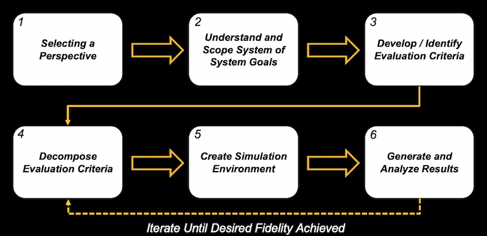
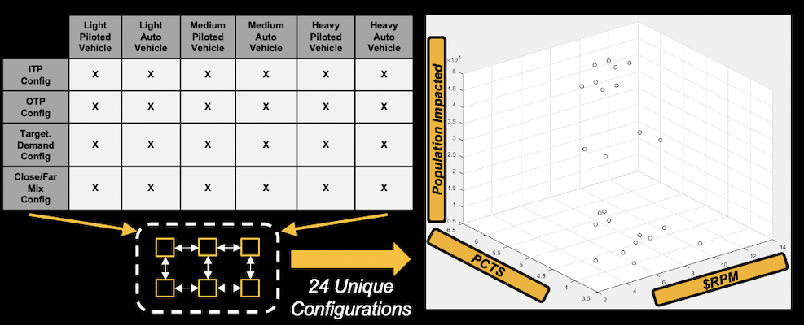

Summary :
Urban Air Mobility (UAM) is proposed as an alternative means of transportation within urban areas. Due to a convergence or enablers including namely improved battery technology and artifical intelligence among others, UAM implementations are rapidly approaching feasibility. As such, in the near future, decision-makers will be faced with the challenge of deciding which UAM implementation is most suitable to their particular situation. This being said, the UAM as a System-of-Systems (SoS) consists of thousands of different elements and performing decision making becomes unmanageable due to the number of possible alternatives.
This project, completed with the support of Saab Technologies, sought to devise a methodology to facilitate decision-making and evaluation of highly-complex and interconnected SoS. This methodology was then demonstrated through the evaluation of different implementations of a UAM "Airport Shuttle" within the city of Atlanta, Georgia. This involved the creation of a computation environment to allow for the evaluation of different alternatives and an accompanying dashboard to facilitate user interaction and decision making.
My Contribution :
- Took on the responsibilities of team lead including handling communication between the student team,research engineers, and sponsors as well as decomposing and assigning tasks.
- Participated in the synthesis of a methodology for the evaluation of System-of-Systems. This involved conducting a substantial literature review as well as brainstorming with sponsors and other members of the team to understand the need for the methodology and identify a manner to devise a solution to respond to this need.
- Developed a "Societal Impact" module for the computational framework. This module was created in Matlab and paired a rotorcraft noise model with GIS data to calculate the number of people exposed to high-levels of noise coming from the vehicles in the UAM SoS.
- Developed the dashboard which was paired with the computational environment to facilitate decision making. Linked Matlab modules for calculating societal impact, cost to the user, and time savings for the user in order to create a SoS evaluation environment. I also created a GUI connected to this environment to facilitate the exploration of alternatives and decision making.
- Presented the project to various industry leaders during the ASDL's External Advisory Board.

Roadmap of Steps to Achieve Project Goals

Results from Design of Experiments Conducted on UAM SoS in Atlanta